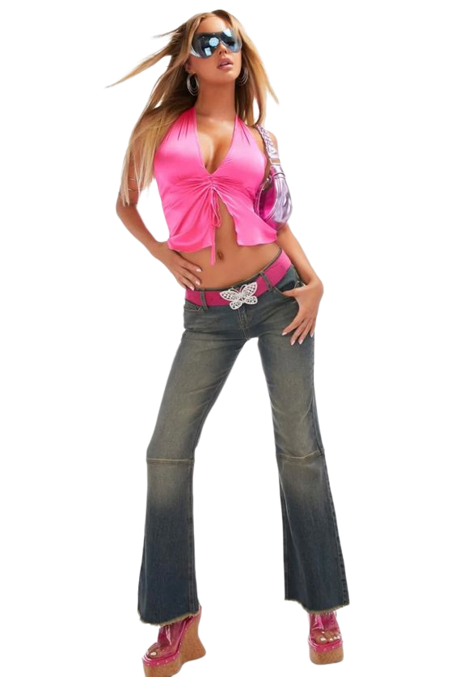
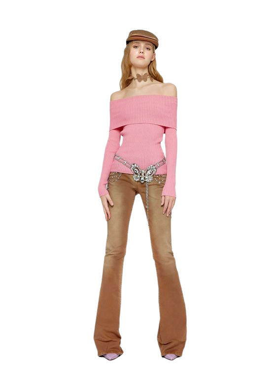

Due to globalization and the rise of fast fashion, when affordable clothes inspired by runway designs can now be found in department stores fashion trends became even more widespread. Moreover, celebrities and characters from TV shows were the style icons of the decade and influenced many people.

Fashion was also marked by the rapid development of technology, which translated into fashion. The Matrix movie in particular inspired a few designers like Balenciaga, Calvin Klein, and Yves Saint Laurent to use almost exclusively black for their Fall 2001 collections.

The predominant looks of the decade were the bohemian (or boho) look that replaced the grunge look of the nineties (vintage and handmade clothing was in vogue), hip-hop, streetwear, Y2K, scene, emo, and athleisurewear.